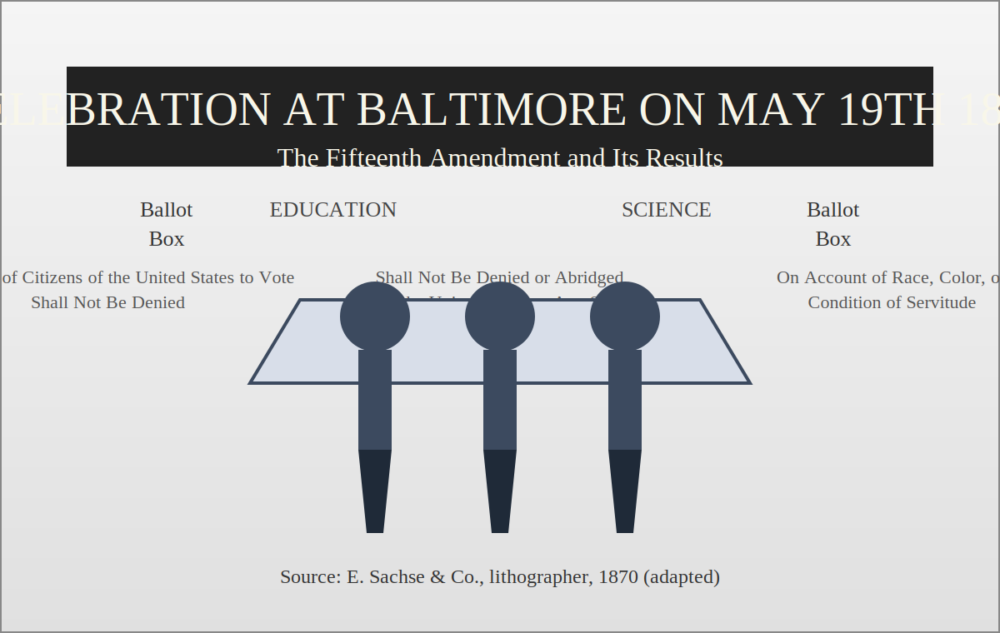
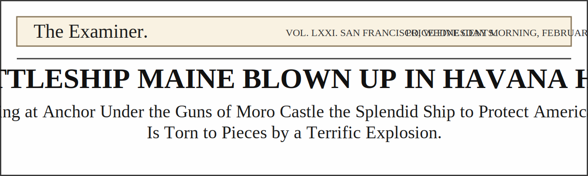
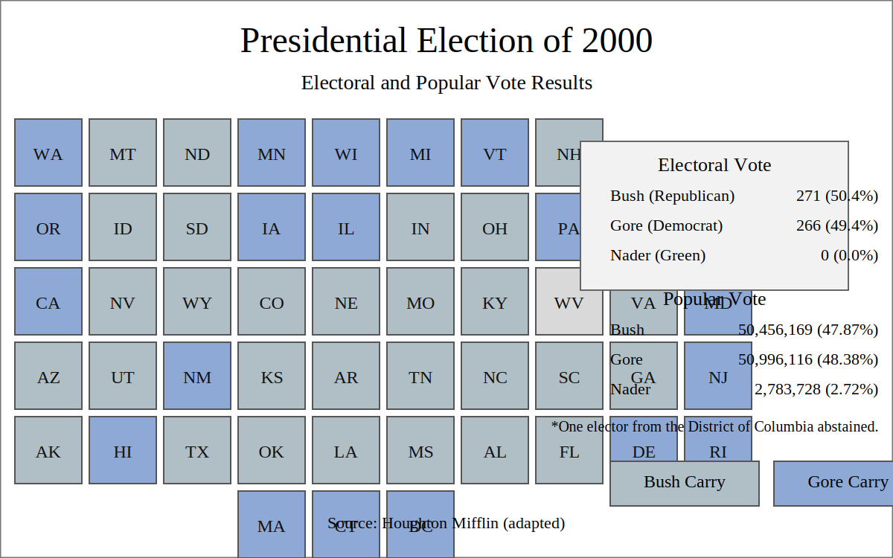
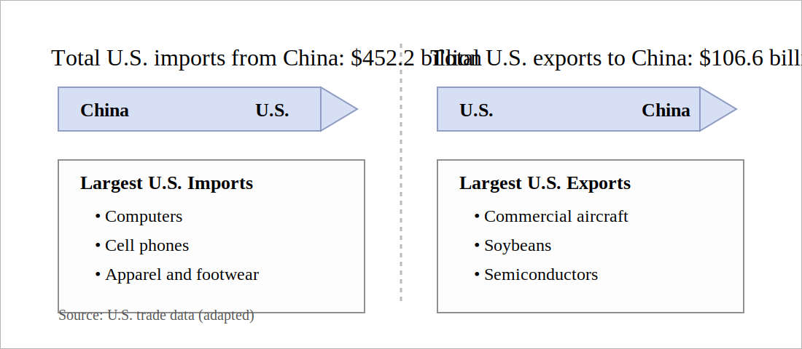

  .qwrap.single { grid-template-columns: 1fr; }
  .qwrap.single .divider { display:none; }
    <!-- Slide 5: Q9–10 (Poster) -->
      
    <!-- Slide 7: Q13–14 (Headline) -->
      
    <!-- Slide 8: Q15 (Wilson) -->
      <div class="qwrap single">
    <!-- Slide 14: Q26–27 (Election map) -->
      
    <!-- Slide 15: Q28 (Trade graphic) + blank -->
      
